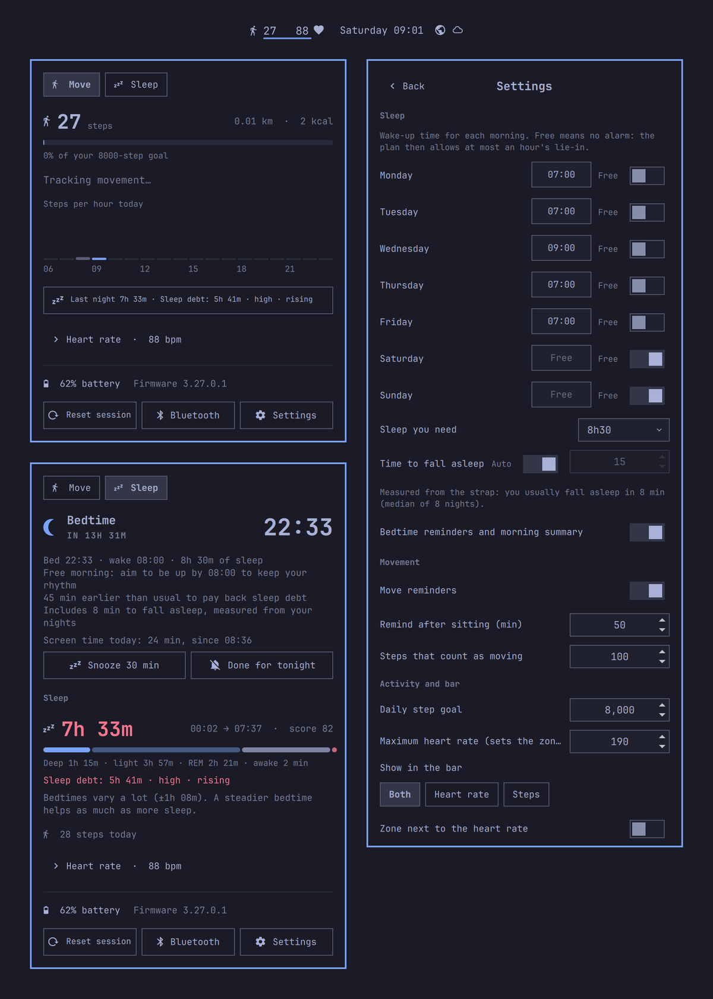

Ebb
Flow by day, ebb by night. Today's steps, live heart rate and last night's sleep from an Amazfit Helio Strap, right in the Omarchy bar, with a sleep coach that tells you when it's time to stop.

What it does
Steps in the bar
Today's step count, distance and calories, with a daily goal. The bar can show steps, heart rate, or both.
Heart rate
Live bpm with five zones, a ten-minute chart and session min, average and max. Works with any Bluetooth LE heart rate strap.
Sleep and sleep debt
Last night's sleep and stages, and a running sleep debt in real hours: recent nights count most, and one long night can't erase a short week.
A bedtime that fits your week
Set a wake-up time per weekday, or mark a morning as free. Bedtime follows the next morning and moves a little earlier when you owe sleep.
A red moon when it's time to stop
An hour before bedtime the bar shows a moon. Past bedtime it turns red. Notifications stay few, and only while you're actually at the computer: a wind-down notice, a bedtime notice, two reminders after it, then silence. In the morning you get one summary of the night.
Install
omarchy plugin add https://github.com/lorismaz/omarchy-ebb --enableThe panel talks to the strap through a small Bluetooth helper written in Rust. The first time you open the panel it offers Install helper, which downloads the helper for your machine from the project's GitHub release, checks it against a pinned SHA-256 and installs it to ~/.local/share/helio-strap/bin/.
Pair the strap in Omarchy's Bluetooth panel. Heart rate, zones and battery work straight away.
Steps and sleep
The strap shares steps and sleep only over Zepp's encrypted channel, which needs the strap's auth key. Click Set up steps in the panel and either log in with your Zepp account (email and password) or paste a key you already have, for example from Gadgetbridge. The key is saved to your desktop keyring, never to a file.
This uses Zepp's private API, so it may stop working if Zepp changes it; heart rate keeps working regardless. Accounts that sign in with Google, Apple or a phone number need a password added in the Zepp app first. Sleep data is always read with "keep on device", so the Zepp app still syncs the same nights.
Settings
Open the panel and click Settings: wake-up time for each weekday, sleep you need, minutes to fall asleep, bedtime reminders, step goal, maximum heart rate, what the bar shows, and the strap to follow. Everything also works from the terminal:
omarchy bar set lorismaz.ebb wakeWed 09:00
omarchy bar set lorismaz.ebb sleepNeed 7h30Why these rules
- Chronic short sleep builds a deficit people stop noticing (Van Dongen et al., 2003).
- One long night doesn't repay it; recovery takes days (Banks et al., 2010; Kitamura et al., 2016), so a night repays at most two hours.
- Regular sleep times matter independently of duration (Phillips et al., 2017; Windred et al., 2024), so free mornings allow at most an hour's lie-in.
- Repeated reminders lose their effect (Giuntella, Saccardo & Sadoff, 2025), so the evening sequence is short.
The debt levels follow Oura and Rise; the decay rate, payback and regularity thresholds are heuristics, not validated values.
Privacy
Everything stays on your machine. The only network traffic is the optional Zepp login during setup, which talks to Zepp's servers.